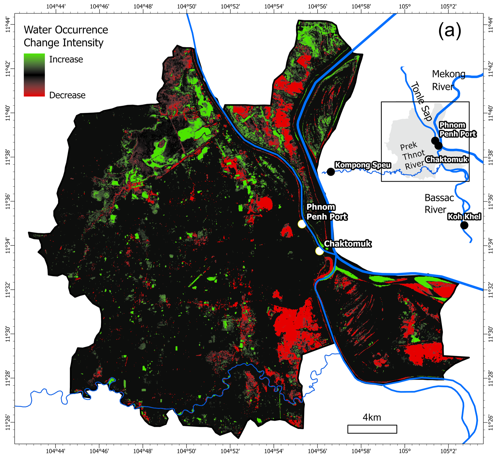
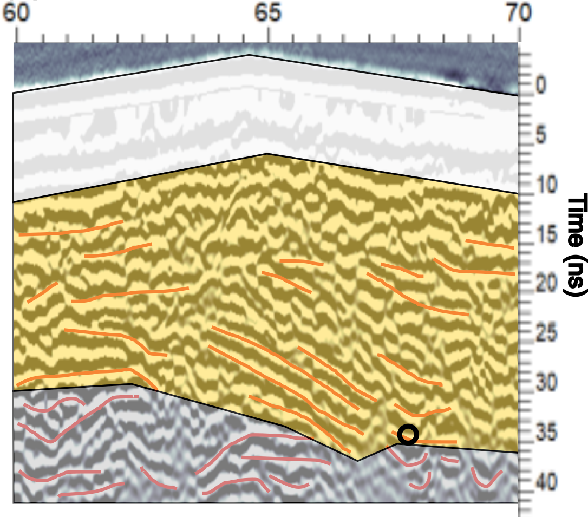
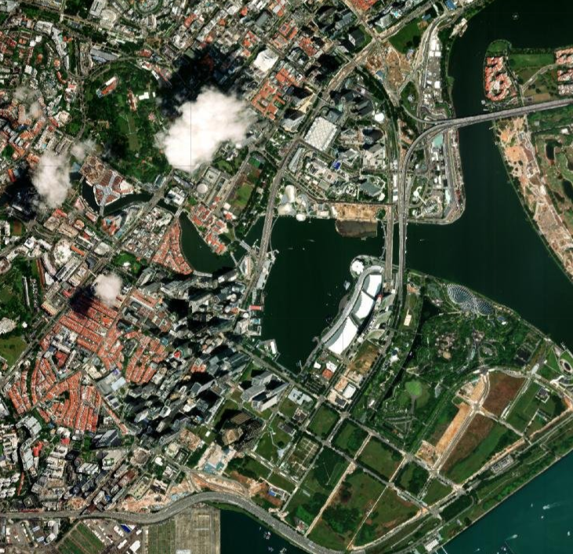
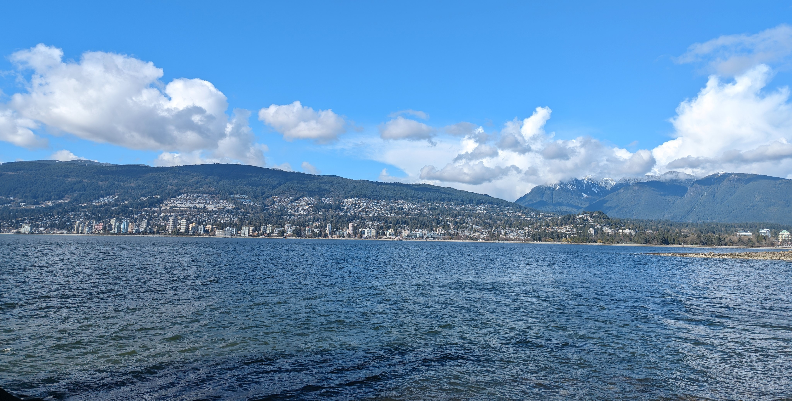

Projects




Flooding and Precipitation in Phnom Penh
2022-2024
Examining increasingly prevalent floods in Phnom Penh through analysis of remote sensing and instrumental data
Memorabilia



2022-2024
Examining increasingly prevalent floods in Phnom Penh through analysis of remote sensing and instrumental data